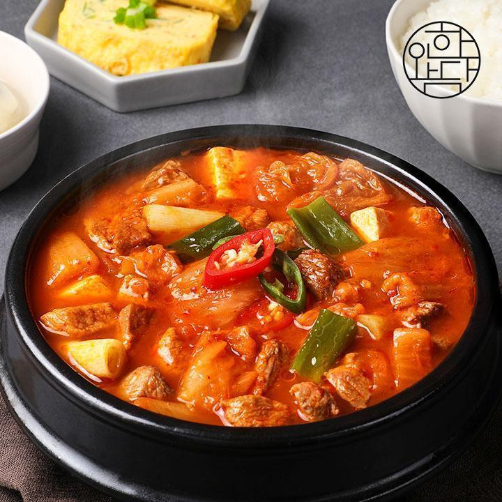
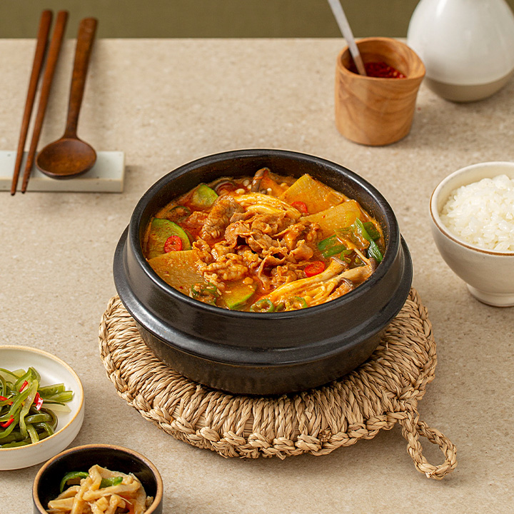

찌개
-
김치찌개
1. 신김치 국그릇 가득, 대파 1뿌리, 참치 1캔, 식용유 3스푼, 고추가루 1스푼, 김치국물 3스푼, 물 400ml
2. 식용유 3스푼을 김치위에 돌돌 돌려 뿌려주신 다음 약-중 중간 불에서 달달 볶아주세요
3. 다음 참치 1캔을 함께 넣어 달달 볶아주세요 이 때 참치캔 기름은 버리지마시고 함께 넣어주세요
4. 물 400ml를 넣어 끓여주세요
5. 계속 끓이다가 대파 한뿌리 송송 썰어주신 걸 넣어주세요~ 다진 마늘 좋아하시면 다진마늘 티스푼으로 1스푼 넣어주셔도 좋아요
6.고추가루 1스푼을 넣어준 다음 끓여주시면 끝~
-
순두부찌개

1. 양파는 깍둑썰고 대파는 송송 썰어요.
2. 볼에 양념 재료를 넣고 양념장을 만들어요.
3. 냄비에 식용유를 넉넉히 두르고 양파와 대파를 넣어 약불에서 볶아요.
4. 양념 재료, 물, 순두부를 넣은 후 한소끔 끓여 완성해요.
-
된장찌개
1. 물1.5종이컵에 된장,고추가루,다진마늘,설탕,간장을 한데넣고 한소끔 끓여줍니다.
2. 그사이 양파,버섯,애호박,청양고추,두부는 적당한 크기로 썰어줍니다.
3. 한소끔 끓은 된장물에 양파,버섯,애호박,청양고추,두부를 넣어 줍니다.
4. 애호박이 익을때까지 끓여주어 간을보아 부족한간은 소금으로 해주어 완성.